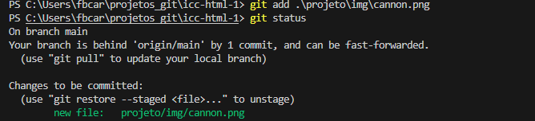

O Git é a ferramenta de controle de versão mais utilizada do mundo. Neste tutorial breve, será demonstrado de maneira simples e prática como começar a usar o Git para auxiliar nos seus trabalhos
Muitas vezes, ao se falar de git, se fala sobre o seu workflow, ou seja, o "fluxo de trabalho" que é utilizado ao fazer um projeto. Ao se acostumar, essas etapas tornam-se naturais. Mesmo assim, é importante ressaltar no começo as fases do desenvolvimento, como ilustradas na imagem abaixo.

Todo workflow começa criando um repositório. As duas principais maneiras são com o comando git init ou com o git clone. A diferença entre os dois é que o git init cria a estrutura de trabalho localmente, deixando a linkagem com o GitHub ou serviços remotos para outros comandos, enquanto o git clone, como o nome diz, clona um repositório da internet, podendo este ser seu próprio. É recomendado começar com o git clone, pois ele é muito mais fácil de usar!
Com o repositório clonado ou iniciado, pode-se começar a trabalhar. Olhando a imagem, agora estamos no bloco da esquerda, o diretório de trabalho, e fazemos alterações usando nosso editor de texto de preferência. O Git já estará registrando as alterações.
Agora já estamos com um tanto de alterações feitas e vamos prosseguir para os próximos passos. A próxima etapa é enviar as alterações do diretório de trabalho para o git local. Para fazer isso temos dois comandos essenciais: git add e git commit. Algumas alterações já vão diretamente quando usamos o git commit, algumas alterações, como mudanças no texto de arquivos, tem que ser adicionadas com o git add. O comando git status sempre te dará uma ideia do que deve ser feito, então nunca deixe de usá-lo.

O comando acima nos demonstra como um dos arquivos não será rastreado sem usar git add!
Agora as alterações estarão presentes no próximo commiy
Alguns comandos úteis são o git commit -a, que já "inclui" o git add, e o git commit -m "Mensagem", onde "Mensagem" é uma mensagem descritiva das alterações feitas no commit. Isso nos trás para o próximo tópico: mensagens de commit. Ao usar o git commit, o git abre o editor escolhido na instalação do git (que pode ser alterado nas configurações) para que o usuário escreva sua mensagem de commit. Não se espante se ele abrir o vim ou outro programa arcaico e pesquise como usá-lo! (no vim, use "i" para entrar no modo de inserção de texto e depois aperte esc e ":wq" para salvar e sair).
Com o commit feito, só um comando nos separa de enviar as alterações para o GitHub, o git push. Na primeira vez que ele é usado, é necessário que você entre na sua conta do GitHub. O git push envia os commits para o repositório remoto. É como se usássemos add e commit para carregar um canhão e o push acende o pavio!
Agora, para puxar alterações do repositório remoto para o diretório de trabalho, basta usar o comando push. Finalizamos dessa maneira a explicação do workflow, e a imagem acima deve fazer muito mais sentido agora! Apenas dois comandos não foram descritos, por não serem tão úteis nesse momento. Vale ressaltar que o workflow descrito está mais voltado ao trabalho individual. As funções de trabalho em equipe são um oceano imenso a ser explorado e nós incentivamos futuras pesquisas no tópico.
| Ano | Mês |
|---|---|
| 2024 | Junho |
| 2024 | Janeiro |